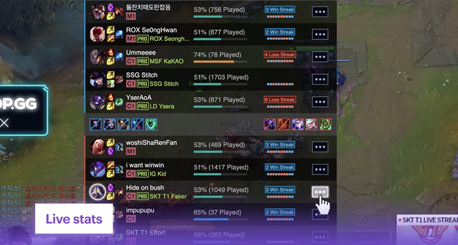
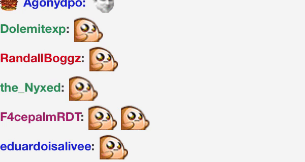
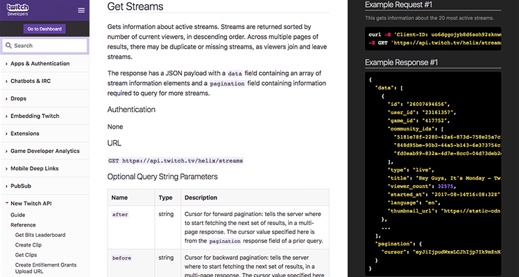

RU Twitch Developer Documentation
Начнете за несколько минут...
-

Расширения
Интерактивный навык который работает как stream overlay или как панель. Это так же просто как писать веб приложение.
-

Чат бот
Создает интерактивное команды в чате Twitch, который могут использовать для получения запросов, моделирование контента и т.д.
-

Новый Twitch API
Использование Twitch данных и индентичные инструменты для улучшения вашей игры или подключения к вашему приложению.
Исследуйте Twitch
-
Приложения и Аутентификация
Система авторизации Twitch.
-
Чат бот и IRC
Позволяет зрителям отправлять сообщения, просматриваемые вещателем и другими зрителями.
-
Вознаграждение
Набор инструментов для предоставления в игре вознаграждениям в вашем игровом комюнити в пределах возможностей просмотра Twitch.
-
Встраивание в Twitch
Опции для встраивания чатов Twitch, видео в реальном времени и VODs на вашем сайте.
-
Разширения
Позволяет стримерам внедрять интерактивный, пользовательский, сторонний контент на свои каналы.
-
Аналитика
Позволяет разработчикам загружать данные о том, как их игры и расширения просматриваются в Twitch.
-
Мобильные ссылки
Внешний запуск приложения Android и iOS
-
Публичная Подписка
Позволяет подписаться на тему, для обновлений (например, когда пользователь приветствует канал). Позволяет серверным службам транслировать сообщения в режиме реального времени клиентам.
-
Новый Twitch API
Инструменты и данные для разработки интеграции с Twitch. Модели и системы данных предназначены для обеспечения релевантных данных простым, последовательным и надежным способом.
-
Twitch API v5
Позволяет разрабатывать собственные приложения, используя богатый набор функций. V5 устарел.
-
Словарь
Получить помощь
Обратиться за помощью, используя наши инструменты для разработчиков или сообщите нам о проблемах с продуктом или документацией:
- Посетите Twitch Developer Forums.
- Посетите Twitter.
- Посетите TwitchDev chat server.
Условия эксплуатации
Получив доступ к API Twitch или используя его, вы соглашаетесь соблюдать и соблюдать Соглашение об услугах Twitch Developer Services. Если вы не согласны с условиями соглашения Twitch Developer Agreement, не обращайтесь к API Twitch или иным образом не используйте его.